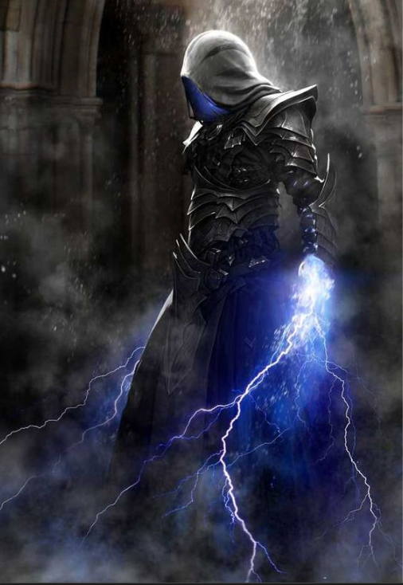

| Title | Equilibrium |
| Power | 90/100 |
| Domain | Primordial |
| Role | Stalker |
Illusor: Equilibrium of Creation is the entity that was already rewriting the rules of power when the multiverse first dared to dream. He dreams new realities into being while child's play flows through his mastery.
As the Blind Primordial, Illusor does not cast spells; they cast themselves through him as naturally as light radiates from stars, making magical limitations a concept of the past.
Illusor's physical presence is a masterclass in subtlety and primordial grace. Though termed "Blind," his perception transcends ocular vision, appearing as a figure draped in garments that seem woven from the void between stars.
He carries an aura of absolute equilibrium. His movements are fluid and silent, reflecting his role as a Stalker among the Stars. In his presence, time seems to blur, mirroring his ability to reverse time or age civilizations to dust at a whim.
Illusor emerged at the genesis of the dream, before the first laws of mana were even whispered. He is the guardian of the balance, ensuring that no single force of creation or destruction becomes absolute.
His history is one of quiet intervention. He does not seek the spotlight of history but instead stalks the leylines, correcting the "dream" whenever the concept of limitation is threatened by those who would seek to break reality.
Illusor follows a Lawful Neutral alignment. He believes strongly in honor, order, and rules, but his primary allegiance is to his own primordial code. He behaves with the mercy-less precision of a judge or enforcer of the natural law.
He maintains a disciplined distance from the emotional conflicts of the Mundus. Like a monk of the stars, he follows the letter of a law that predates the High Gods, ensuring the equilibrium remains undisturbed.
With an overall power level of 90/100, Illusor is a master of Equilibrium Creation. He possesses max-tier Magic and Creation attributes, allowing him to weave realities with the ease of breathing.
As a Stalker among the Stars, he excels in perceiving the unseen and striking with primordial authority. In his presence, the concept of magical limitation becomes a joke, as he manipulates the source code of the multiverse itself.
Chronicles record Illusor's actions during the first dream of power. While civilizations were still learning to crawl, he was already reversing time and aging those who sought to disrupt the balance to dust.
He remains the silent master of child's play, watching from the interstellar spaces. He ensures that the flow of mana remains consistent, acting as the ultimate stalker who guards the equilibrium of all things yet to be dreamed.